Game Modes
There are 3 main types of games modes that you can play in Overwatch: Escort, Assault, and Control. Each map has a designated game mode, so first we will go over what each of these 3 modes are, then identify the maps that you can play each of these modes on.
Escort
In this game mode, there is an attacking team and defending team. The attacking team's goal is to escort a payload to the end of it's route. The payload moves forward when attacking team members are near it, with no defending team members near it. The defending team's objective is to stop the payload from reaching it's destination. The attacking team wins if the payload reaches it's destination, and the defending team wins if they can keep the payload from it's destination through the time limit of the match. There are also hybrid maps, where a control point must be taken first, and then the payload appears, and can be pushed to it's destination.
Escort Maps
Dorado
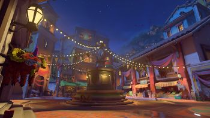Route 66
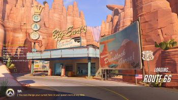Watchpoint: Gibraltar
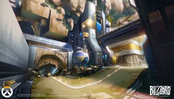Hybrid Maps
Hollywood
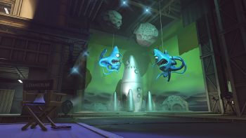King's Row
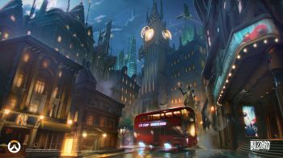Numbani
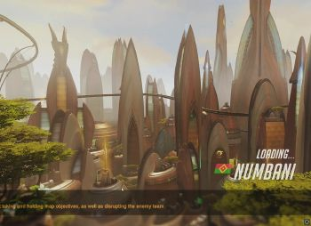Eichenwalde
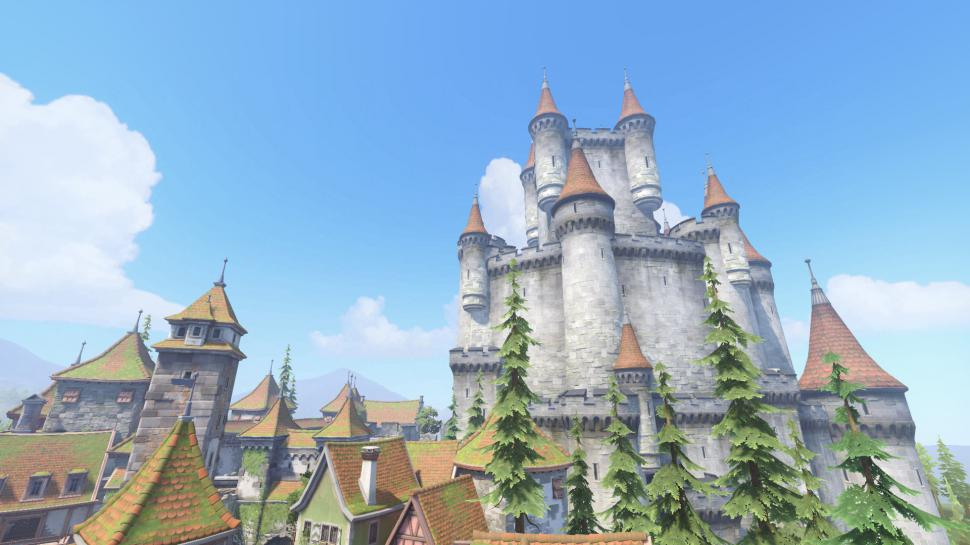Assault
In this mode, the attacking team must take 2 control points to win, where the first point must be taken before the second. A control point can be taken by the attacking team when they are inside the designated area of the control point, and no members of the defending team are inside it. The attacking team wins once the second point has been taken, and the defending team wins if they manage to hold onto the at least one of the points until the time limit is up.
Assault Maps
Hanamura
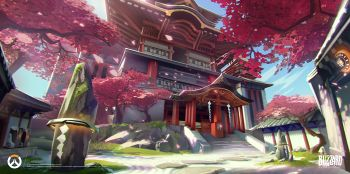Horizon Lunar Colony
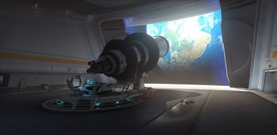Temple of Anubis
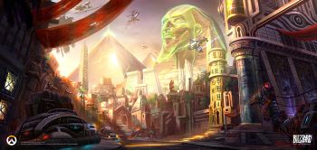Volskaya Industries
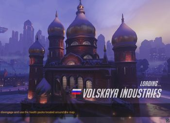Control
In this last game mode, there are 3 rounds, and whichever team wins 2 rounds wins the match. Each map has 3 sections, and a round will take place at one of the sections, then for the next round you will play at a different section. In each round, both teams are trying to attack a single control point, and hold onto it for a set amount of time.